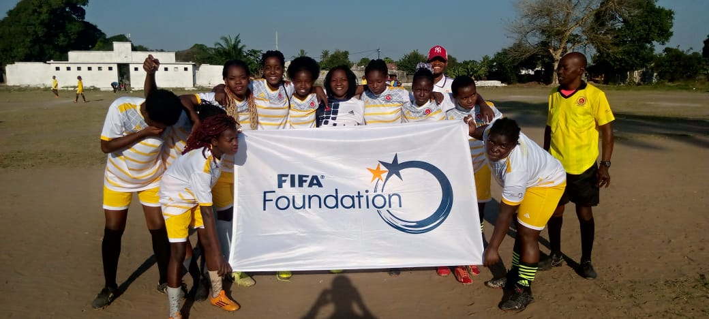

Futebol Feminino
10 Equipas Femininas
de Zonas Remotas
As 10 equipas femininas representam bairros e aldeias onde o futebol feminino era proibido ou fortemente desencorajado. Cada equipa é um acto de resistência e de mudança cultural. Uma rapariga no campo é uma rapariga que não casou cedo, que não abandonou a escola, que diz ao mundo que existe e que tem voz.
♀️ Quebrar Tabus